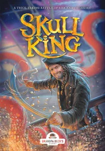
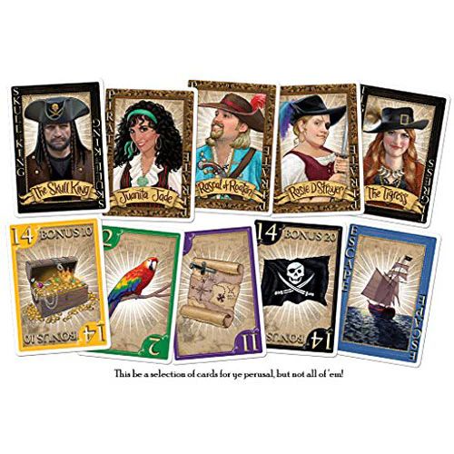

Introduccion
De qué trata este juego? Skull King es en esencia un juego de bazas: los jugadores apostarán durante varias rondas cuántas bazas creen que ganarán y si aciertan obtendrán puntos. A quienes estén habituados a los clásicos juegos de naipes puede que les resulte familiar la mecánica, que es muy fácil de aprender y de aplicar, pero que requiere de mucha intuición si se quiere dominar. Skull King está diseñado por Brent Beck y Jeffrey Beck y ofrece partidas para grupos de 2 a 8 jugadores, a partir de 8 años, de unos 30 minutos de duración.
Contenido de la caja
| Cartas de cuatro palos | Cartas especiales | Cartas de expansión | Elementos adicionales |
| Loro(14) | Pirata(5) | Botin(2) | Carta de ayuda(16) |
| Mapa pirata(14) | Tigresa(1) | Kraken(1) | Carta de envite(16) |
| Cofre de tesoro(14) | Skull King(1) | Ballena blanca(1) | Carta en blanco(4) |
| Bandera Pirata(14) | Siera(2) | Libreta | |
| Huida(1) |

Glosario
- Baza: Cada jugador, en sentido horario, juega una carta boca arriba sobre la mesa. El que juega la carta de mayor valor gana y recoge (captura) la baza en una pila delante de él.
- Mano: Se compone de 1
o más bazas la cantidad de basas en una
mano viene determinada por el número de
cartas repartidas. una mano empieza al
repartir cartas y termina cuando se han
jugado todas las cartas repartidas.
Ejemplo: En la tercera mano se reparten 3 cartas, por lo que se jugarán 3 bazas en esa ronda - Palo: Las cartas de palo son las que están en numeradas del 1 al 14, en cuatro colores
- Triunfo Las cartas de
borde negro (bandera pirata) son el palo
de triunfo. Este palo es de mayor rango
que las cartas numeradas de los otros
colores
Ejemplo: El 14 del palo verde (loros) es de rango inferior que el uno del palo negro (bandera pirata) porque el negro es triunfo - Fijar el palo: La primera carta jugada en una baza marca el palo a seguir. Los jugadores deben jugar una carta de ese palo, si tienen, las cartas sin número no necesitan servir al palo.
Preparacion de la partida
Las disputas de piratas duran diez manos. En cada mano, los jugadores envidan el número de bazas que pretenden ganar durante esa mano. A partir de ahí, el objetivo es cumplir el envite.
Todo aquel que no consiga cumplir su envite, sea por ganar demasiadas bazas o por no ganar suficientes, pierde gloria y fama. No envidar ni una sola baza puede resultar muy lucrativo, pero también muy arriesgado... En la primera mano, cada jugador dispone de una sola carta; en cada mano sucesiva, la cantidad se irá incrementando en una carta. En cada mano, los jugadores pugnarán por conseguir tantos puntos como sea posible y el que consiga la mayor cantidad después de diez manos, será el ganador.
Inicio de la partida
Se barajan bien todas las cartas. Seguidamente, se reparten cartas a cada jugador, boca abajo. La cantidad de cartas cambia de una mano a la siguiente: en la primera mano, cada jugador recibe solamente una carta; en la segunda mano, dos cartas, y así sucesivamente hasta que en la décima y última mano se reparten diez cartas a cada jugador. Durante la mano, se juegan tantas rondas como cartas tienen los jugadores en la mano. Ejemplo: no se pueden ganar cinco bazas si solo tienes cuatro cartas, ya que solo habrá cuatro rondas. En cada ronda, cada jugador, uno tras otro, debe jugar una carta, mostrándola
Después de repartir, cada jugador mira su(s) carta(s) y prevé cuántas bazas cree que podrá ganar con la mano que tiene.
Como señal de que un jugador ha decidido la cantidad de bazas, extenderá el puño hacia el centro
de la mesa. Cuando los puños de todos los jugadores se encuentren reunidos en el centro de la mesa,
entonarán el canto de batalla de los piratas «¡RON! ¡RON! ¡RON!». Al hacerlo, los jugadores golpean
la mesa con el puño a cada sílaba; al tercer «¡RON!», los jugadores abren sus puños al mismo tiempo
y extienden tantos dedos como bazas pretendan ganar en esa ronda.
Nota: el que crea que puede ganar más de cinco bazas, extiende los cinco dedos y, al mismo
tiempo, dirá, alto y claro, la cantidad.
Los envites de cada jugador se anotan en la columna estrecha de la libreta.
El jugador a la izquierda del repartidor empieza la ronda jugando la primera carta. En el sentido de las agujas del reloj, los demás jugadores deben servir al palo; es decir, deben jugar una carta del mismo palo. El jugador que no pueda servir al palo, tendrá que jugar un palo diferente (y perder la baza) o jugar una bandera pirata (el palo negro, que es triunfo). Cuando todos los jugadores han jugado una carta, se determina quién ha ganado la baza. El jugador que gana la baza la coloca, boca abajo, delante de él, cada baza por separado (de manera que cualquiera pueda ver con claridad cuántas bazas tiene el jugador en cuestión), y, seguidamente, juega la primera carta de la siguiente ronda. Cuando se han jugado todas las cartas, la mano finaliza y se anotan las puntuaciones.
La baza la gana siempre el jugador que haya jugado la carta de valor más alto, que tiene que ser siempre del palo con que se ha abierto la ronda. Si se juegan cartas de otros palos (porque el jugador no tiene cartas de ese palo) su valor es irrelevante. Excepción: la bandera pirata (el palo negro) siempre es triunfo y gana a todos los demás palos (con independencia de su valor numérico). El resto de palos son equivalentes entre ellos.
Ejemplo. Se juega un 2 amarillo, seguido de un 12 amarillo; los dos jugadores siguientes no tienen amarillo y juegan un 13 azul y un 1 negro. El 1 negro gana la baza, porque el negro siempre es triunfo. Sin la carta negra, el 12 amarillo ganaría la baza, por ser la carta de mayor valor del palo (amarillo) que ha abierto la ronda.
Puntuación
Un jugador que cumple su envite de bazas recibe 20 puntos por cada baza que haya ganado. Ejemplo: David envida tres bazas y las consigue. Recibe un total de 60 puntos.
Un jugador que gana más o menos bazas de las que ha envidado no suma puntos y no recibe bonificaciones; al contrario, resta 10 puntos por cada baza de más o de menos sobre su envite. Ejemplo:Simón envida cinco bazas, pero solo gana una. La diferencia es de cuatro bazas, así que se resta 40 puntos.